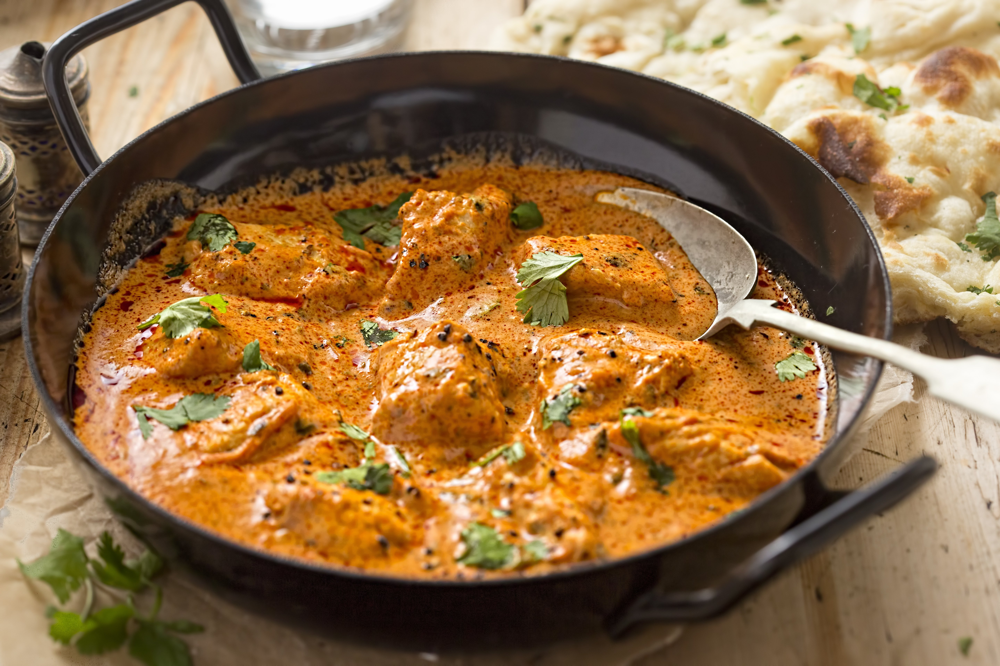

Chicken Madras!

Ingredients
Makes three serves
- 2tsp Olive Oil
- 2tsp Garlic Infused Olive Oil
- 1tsp Cinnamon
- 1tbsp Ginger, Finely Chopped
- 1tsp Tumeric
- 1tsp Cumin Seeds
- 1tsp Ground Coriander
- 1tsp Garam Masala
- 1/2tsp Cayenne Pepper
- 550g Chicken Thigh Fillets, Cut in Half
- 8 Fresh Curry Leaves
- 2 Medium Tomatoes, Roughly Chopped
- 1/3 Cup Coconut Milk, Canned
- 1/4 Cup Coriander, Roughly Chopped
Steps
- Heat the regular olive oil in a pan over medium heat.
- Place the ginger and cinnamon in the pan and cook for 1min.
- Add in the garlic infused olive oil, tumeric, cumin, ground coriander, garam masala, cayenne and curry leaves.
- Cook for 5mins, stirring contantly.
- Add the chicken thighs to coat, and cook for 3mins.
- Stir in the roughly chopped tomatoes and cook for 15mins.
- Add the coconut milk and stir, simmer for 1-2mins, then remove from heat.